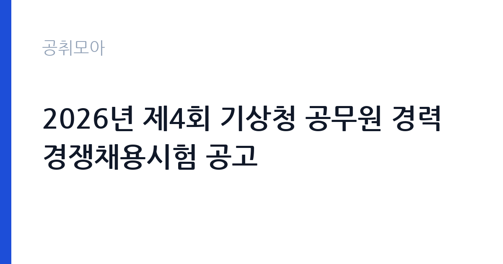

[국가기관] 2026년 제4회 기상청 공무원 경력경쟁채용시험 공고
기상청 · 서울 · 마감 2026-11-09 (D-12) · 출처 나라일터

한눈에 보는 모집 조건
| 기관 | 기상청 |
|---|---|
| 공고명 | 2026년 제4회 기상청 공무원 경력경쟁채용시험 공고 |
| 고용형태 | 정규직 |
| 근무지 | 서울 |
| 게시일 | 2026-10-28 |
| 마감일 | 2026-11-09 (D-12) |
지원자격, 이렇게 읽으세요
- 기상연구사 4명 전문임기제 나급 1명 일반임기제 기상주사 1명
- 접수 ~2026-11-09 마감
- 세부 조건은 원문 공고문 확인
정규직 채용은 기간의 정함이 없는 근로계약을 전제로 합니다. 수습 기간을 두고 평가한 뒤 정규직으로 확정하는 절차가 일반적이며 기관의 인사 규정과 임금 체계를 적용받습니다. 이번 공고는 기상청에서 직접 진행하는 자체 전형으로, 응시자격과 제출서류는 공고문에 항목별로 제시됩니다. 기상 지원 직무는 관련 전공이나 기상기사 자격을 우대하는 경우가 많습니다. 공무직 채용은 학력·경력 제한이 없는 대신 실제 근무 가능성과 교대 근무 수용 여부를 봅니다. 컴퓨터 활용과 문서 작성 능력은 기본으로 요구됩니다. 근무지가 공항이나 지방청 소재지이므로 통근 가능성을 확인해야 하고, 보안 서약과 신원조회 절차가 따릅니다. 서류는 접수 마감 이후 보완이 되지 않으므로 자격 요건과 증빙 서류를 마감 전에 모두 갖춰야 합니다. 공고문에 명시된 우대 사항은 해당 여부를 확인해 증빙을 첨부해야 가점이 반영됩니다. 학력이나 전공 요건이 없는 공고라도 제출서류 목록은 그대로 적용되므로 서류 준비 부담은 줄지 않습니다. 이 공고 원문에 적힌 응시 조건 문구는 '[2026년 제4회 기상청 공무원 경력경쟁채용 공고] 1.'입니다. 문구를 그대로 읽고 본인 해당 여부를 하나씩 표시해 두면 서류 단계에서 탈락하는 일을 줄일 수 있습니다.
이 공고의 포인트
이 공고의 첫 번째 포인트는 고용 형태입니다. 수습 기간 평가를 통과하면 기간의 정함이 없는 신분이 되어 고용이 안정됩니다. 두 번째는 업무 범위가 명확하다는 점입니다. 기상 지원 직무로 채용되므로 배치 이후 담당 업무가 크게 흔들리지 않습니다. 세 번째는 근무지입니다. 서울 지역 근무로 접근성은 좋지만 그만큼 지원자가 몰리는 지역이므로 경쟁률을 넉넉히 잡아야 합니다. 접수 기간이 길지 않아 서류 준비와 자격 확인을 동시에 진행해야 합니다. 다만 선발 인원이 4명으로 많지 않아 자격을 갖춘 지원자가 몰리면 경쟁률이 높아질 수 있습니다.
전형은 어떻게 진행되나
전형은 서류심사와 면접심사를 기본으로 하고 직무에 따라 필기나 실기, 체력검정이 추가됩니다. 서류 단계에서는 응시자격 충족 여부와 제출서류 형식을 확인하며 이 단계에서 탈락하는 지원자가 적지 않습니다. 면접은 직무 이해도와 경험을 확인하는 방식으로 진행되고 발표는 개별 통보나 홈페이지 게시로 이뤄집니다. 최종합격 이후에는 결격사유 조회와 채용 신체검사가 이어지며 이 절차에서 문제가 확인되면 합격이 취소될 수 있습니다. 구체적인 전형 단계와 배점은 공고문에 표로 정리되어 있으니 원문을 기준으로 준비하십시오. 면접조 편성과 대기 시간이 공지되므로 당일 도착 시간을 여유 있게 잡으십시오.
원문에서 확인한 전형 방식
[2026년 제4회 기상청 공무원 경력경쟁채용 공고] 1. 임용예정인원(6개 직위, 총6명) ○ 채용예정 직급/직무분야/근무예정지 - (지원코드A) 기상연구사/ 지진연구/ 서울 동작구 - (지원코드B) 기상연구사/ 기상위성 분석 및 예보지원/ 충북 진천군 - (지원코드C) 기상연구사/ 기후예측 연구/ 제주 서귀포시 - (지원코드D) 기상연구사/ 대기조성물질 분석 및 연구/ 제주 서귀포시 - (지원코드E) 전문임기제 나급/ 인공지능 기획/ 대전 서구 - (지원코드F) 일반임기제 기상주사/ 영향예보/ 서울 동작구 ○ 접수기간 : 2026.11.2.(월) ~ 2026.11.9.(월) ○ 응시방법 : 등기우편 및 방문접수 ○ 문의처 : 기상청 운영지원과 경력채용담당자 042-481-7249, 7247
이런 분께 추천해요
- 기상·기후 관련 전공이나 자격을 갖춘 분
- 정확한 기록과 보고 체계를 지킬 수 있는 분
- 교대·야간 근무가 가능한 분
지원 전 체크리스트
- 응시자격 요건과 경력 기준을 충족하는가 — 경력은 증명서로 입증해야 합니다
- 수습 기간과 정규직 전환 조건을 확인했는가
- 제출서류 목록을 모두 준비했는가 — 누락 시 서류 단계에서 탈락합니다
- 접수 마감 2026-11-09 이전에 접수 방식을 확인해 제출했는가
모집 일정과 제출 타이밍
접수 마감은 2026-11-09이고 공고는 2026-10-28에 게시되었습니다. 준비 기간 12일 안에 서류 작성, 증빙 발급, 접수를 모두 마쳐야 하므로 주말을 포함해 일정을 미리 나누는 것이 좋습니다. 특히 경력 기술서나 직무수행계획서를 요구하는 공고는 작성에 시간이 걸리므로 첫날 초안을 잡으십시오. 서류 합격자 발표와 면접 사이 간격이 짧은 경우가 많아 면접 예상 질문은 서류 제출 전에 정리해 두는 편이 유리합니다. 마감 직전에는 접속이 몰리므로 여유를 두고 제출하십시오. 서류 발표일과 면접일 사이가 짧은 경우가 많아 면접 준비는 접수와 동시에 시작하는 편이 좋습니다. 서울 근무지는 대중교통 접근성이 좋은 대신 주차와 통근 시간이 변수입니다. 출퇴근 경로를 미리 확인하십시오. 마감까지 2주 안팎이 있어 준비할 시간은 있지만 미루면 촉박해집니다. 선발 인원이 소수라 면접에서 변별력이 크게 작용하는 전형입니다.
직무 이해하기: 국가기관
기상청은 기상 관측과 예보, 기후 정보를 생산하는 국가기관입니다. 지방기상청은 지역 예보와 관측 장비 운영을 맡고 기후 해설과 정보 제공 업무를 함께 수행합니다. 24시간 관측 체계가 유지되어 교대 근무가 필요한 분야가 있습니다. 기상 지원 업무는 관측 자료와 예보 정보를 정리해 수요 부서에 전달하는 일입니다. 항공기상 분야는 항공기 이착륙에 필요한 기상 정보를 확인하고 조종사와 운항 부서에 브리핑 자료를 제공합니다. 관측 장비의 작동 상태를 점검하고 이상이 있으면 보수를 요청하며, 일일 관측 기록과 통계를 정리합니다. 24시간 운영 체계에 맞춰 교대 근무가 포함될 수 있고, 기상 특보 상황에서는 업무량이 크게 늘어납니다. 공무직 근로자는 기관 임금표와 복무 규정을 적용받습니다. 업무는 혼자 처리하기보다 부서 단위로 나눠 진행되므로 담당 구역과 협업 범위를 입사 초에 확인하는 것이 중요합니다. 업무 매뉴얼과 지침이 문서로 정리되어 있어 절차를 익히면 반복 업무는 빠르게 손에 붙습니다.
자기소개서 작성 팁
지원서는 데이터를 다룬 경험과 정확성을 중심으로 쓰십시오. 관측·통계 자료를 정리한 경험, 오류를 발견해 수정한 사례가 소재가 됩니다. 교대 근무가 가능하다는 점과 야간·휴일 근무에 대한 계획을 분명히 밝히십시오. 기관의 업무 특성을 조사해 어떤 부서에서 기여할 수 있는지 구체적으로 쓰면 좋습니다. 문항별 글자 수 제한을 먼저 확인하고, 각 문항의 첫 문장에 결론을 배치하는 방식이 읽기 쉽습니다. 지원 동기는 기관의 어떤 사업에 기여하겠다는 한 문장으로 시작하고, 이어서 본인의 경험을 근거로 붙이십시오. 감점을 피하려면 다른 기관에 보낼 수 있는 범용 문장을 그대로 쓰지 않는 것이 중요합니다. 기관 이름과 사업명이 문장 안에 자연스럽게 들어가야 준비도가 드러납니다.
면접 준비 포인트
면접에서는 자료 해석의 정확성과 교대 근무 적응을 확인합니다. 관측 값이 이상할 때 어떤 순서로 확인하는지, 특보 상황에서 우선 처리해야 할 업무가 무엇인지 묻습니다. 보고 체계를 지키는 태도와 기록의 정확성을 강조하십시오. 장비 고장 시 대응 절차도 질문 대상입니다. 답변은 상황, 판단, 조치의 순서로 정리하면 전달이 분명해집니다. 모르는 질문에는 모른다고 밝히고 확인 방법을 제시하는 편이 억지 답변보다 낫습니다. 마지막에는 근무 의사와 함께 2026-11-09 이후 일정에 언제든 응할 수 있다는 점을 전달하십시오. 면접 당일 신분증과 제출서류 원본을 요구하는 경우가 있으니 공고문의 준비물 목록을 확인하십시오.
급여·근무조건 읽는 법
기상청의 구체적인 보수 수치는 이 공고 원문의 처우 항목과 보수표에서 확인해야 합니다. 공시 자료로 확인되지 않은 금액은 이 글에서 추정해 제시하지 않습니다. 알리오 2025년 결산 공시 기준 공공기관 전체 일반정규직 1인당 평균보수는 7,376만 9천원, 신입사원 평균초임은 4,031만 6천원입니다(무기계약직 미포함). 공무직 근로자는 기관 임금표의 기본급에 정액급식비와 명절휴가비, 초과근무수당이 더해지는 구조입니다. 교대 근무가 포함되면 야간·휴일 근무수당이 붙어 실수령액이 달라집니다. 2026년 적용 최저임금은 시급 10,320원, 월 환산 2,156,880원(주 40시간·209시간 기준)입니다. 고용노동부 고시 제2025-47호로 확정된 금액입니다. 공고문에 금액이 제시되지 않은 항목은 원문 보수표나 처우 설명에서 확인해야 하며 확인되지 않은 수치는 쓰지 않는 것이 원칙입니다. 비교할 때는 월 급여뿐 아니라 상여·명절휴가비·복지포인트·초과근무수당까지 포함한 연간 총액으로 계산하십시오. 기간제라면 계약 기간 동안의 총액을, 무기계약이라면 호봉 상승과 정년까지의 누적 소득을 기준으로 판단하는 편이 정확합니다.
자주 묻는 질문
- 선발 인원은 몇 명인가요?
공고문 기준 4명입니다. 직종별로 인원이 나뉘는 경우가 있으니 모집분야 항목을 함께 확인하십시오. - 근무지는 어디인가요?
서울 지역의 기상청 소속 근무지입니다. 세부 주소와 출퇴근 조건은 원문 공고문에서 확인할 수 있습니다. - 보수는 얼마인가요?
채용 신분(정규직)과 기관 임금 규정에 따라 정해지며 구체적인 금액은 공고문 처우 항목에 제시됩니다. 금액이 공개되지 않은 경우에는 원문의 보수표를 확인하십시오.
함께 보면 좋은 공고
[국가기관] 2026년 제주세관 공무직(청소원, 여행자통관지원요원) 채용 공고 — 마감 2026-11-05[국가기관] 공주교육대학교 국가직공무원 행정9급 전입 희망자 모집 공고 — 마감 2026-11-10[국가기관] [부산고등법원] 공무직 근로자(환경관리원) 신규채용시험 시행계획 공고 — 마감 2026-11-11출처: 나라일터 공개정보를 바탕으로 공취모아가 정리한 안내글입니다. 모집 조건·일정은 변경될 수 있으니 지원 전 반드시 원문 공고문을 확인하세요. 본 글은 정보 제공용이며 합격을 보장하지 않습니다.